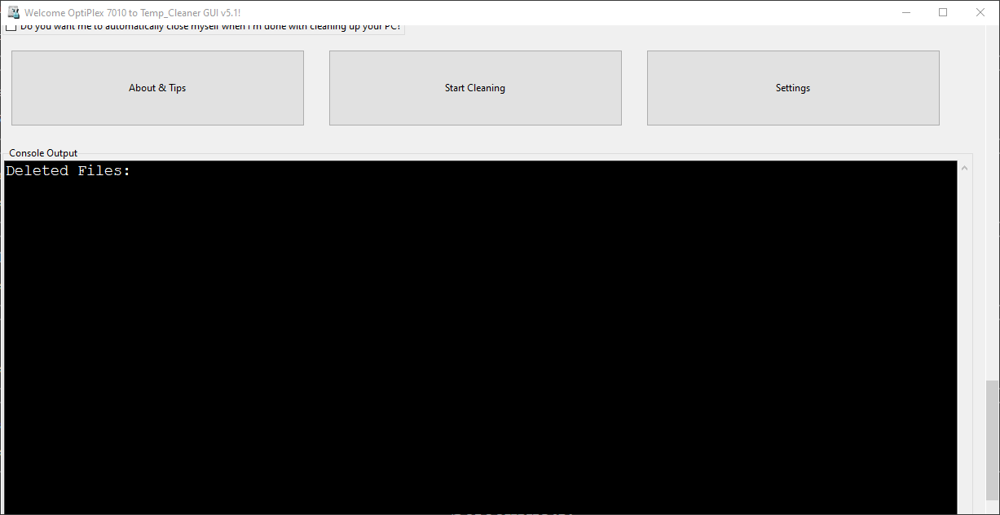
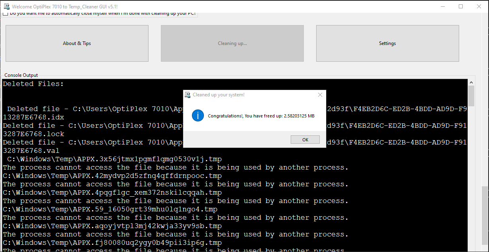
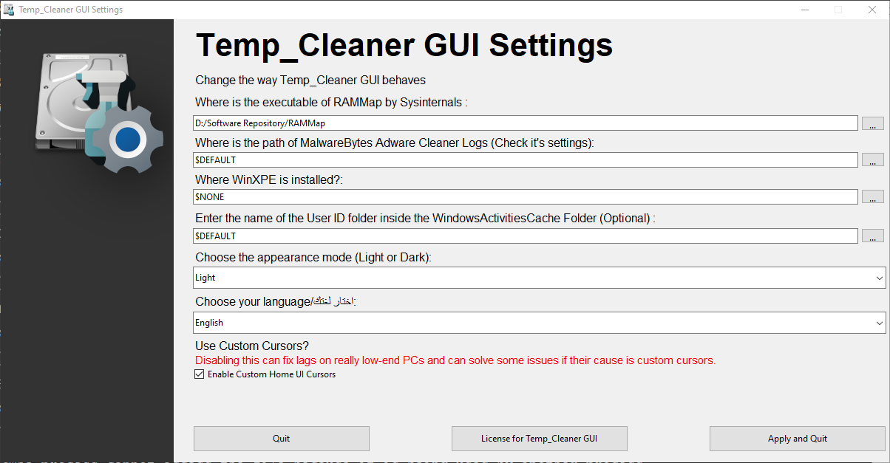
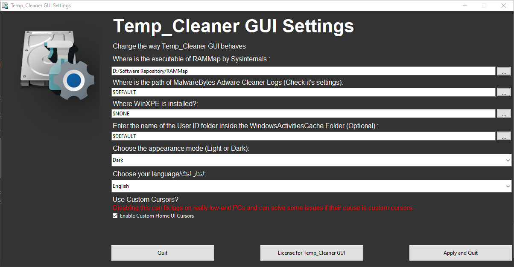
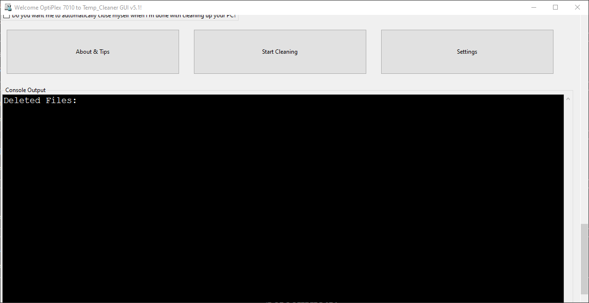
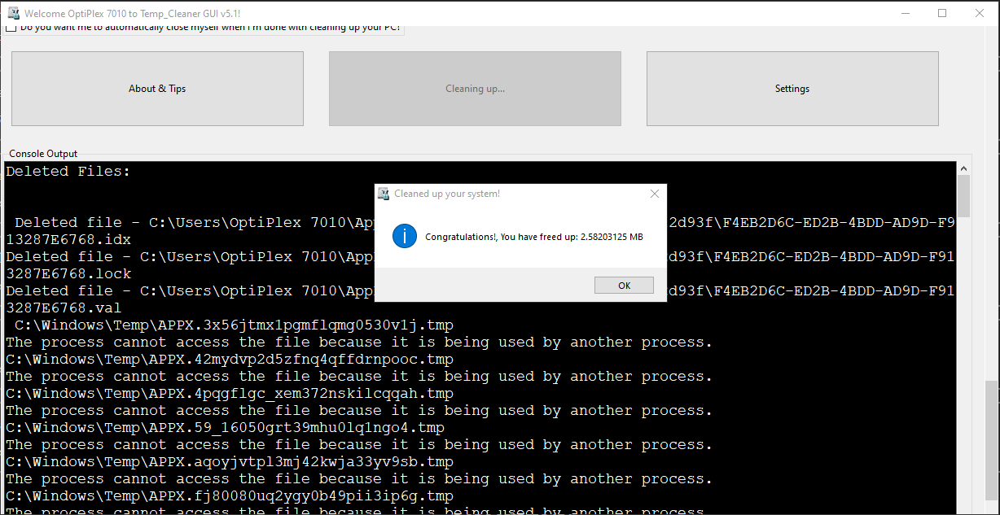
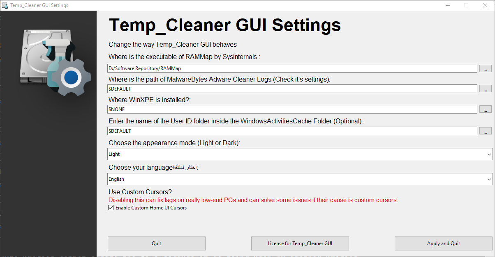
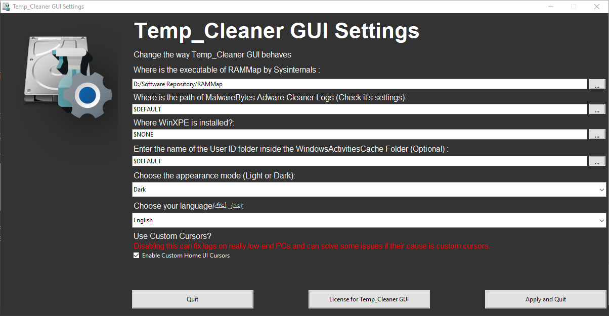

Temp_Cleaner GUI | Home | Downloads | About | ||
|---|---|---|---|---|---|

Welcome to Temp_Cleaner GUI!, The world's most powerful yet free and open-source PC cleaner available.
Being world's most powerful PC cleaner available makes it your #1 choice when you want a very powerful PC cleaner program

Free and Open-Source
Being a Free and Open-Source product gives you the freedom to share the program and use it for both personal and commerical purposes.

Easy to use
As you probably noticed, All you have to do is just checking the areas you want to clean and click the "Start Clicking" button

Supports vast majority of Windows Versions
Compatibility is our top priority, That's why Temp_Cleaner GUI supports the vast majority of Windows Desktop Versions

Safely cleans up your PC
We made Temp_Cleaner GUI in a way that it doesn't negatively affect the performance and stability of your PC or any programs in it.

Trusted by many websites and users
Temp_Cleaner GUI is trusted by many popular Software Listing Websites (check Softpedia and Majorgeeks pages for Temp_Cleaner GUI) and thousands of users worldwide

Cleans what other cleaners can't
Temp_Cleaner GUI has a lot of cleaning options that aren't available in most popular PC cleaners.

It respects your privacy
Temp_Cleaner GUI doesn't collect anything about you (not even error reports or optional diagnostic data).

Has an active 24/7 support community
Temp_Cleaner GUI has it's own dedicated Support Discord Server (Click here to join)


 
